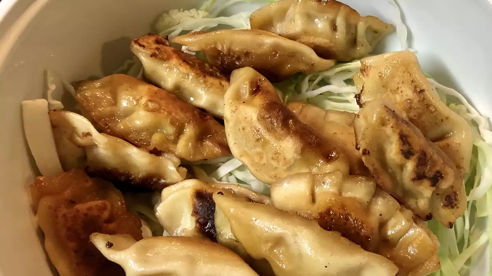

Dumpling Recipe

By following this recipe you will create a delicious set of 50 pork dumplings!
It will take around 20 minutes to prepare and will take 1 hour to cook
Ingredients:
Dipping Sauce
- 1/2 cup of soy sauce
- 1 tablespoon seasoned rice vinegar
- 1 tablespoon sesame seeds
- 1 teaspoon chile-garlic sauce
Dumplings
- 1 pound ground pork
- 3 cloves of minced garlic
- 1 large beaten egg
- 2 tablespoons of chopped chives
- 1 and 1/2 tablespoons sesame oil
- 1 tablespoon minced fresh ginger
- 50 dumpling wrappers
- 1/2 cup vegetable oil
Directions
- Prepare dipping sauce: Combine soy sauce, rice vinegar,
chives, sesame seeds, and chile sauce in a small bowl. Set aside.
- Prepare dumplings: Mix pork, garlic, egg, chives, soy sauce, sesame
oil, and ginger in a large bowl until thoroughly combined.
- Place a dumpling wrapper on a lightly floured work surface
and spoon about 1 tablespoon of the filling in the middle.
Wet the edge with a little water and crimp together forming
small pleats to seal the dumpling. Repeat to form remaining dumplings.
- Heat 1 to 2 tablespoons vegetable oil in a large skillet over medium-high heat.
Place 8 to 10 dumplings in the pan and cook until browned, about 2 minutes per side.
Pour in 1 cup of water; cover and cook until the dumplings are tender and pork is cooked through,
about 5 minutes.
- Repeat to cook remaining dumplings, adding more oil and water for each batch
- Serve dumplings with dipping sauce
return home